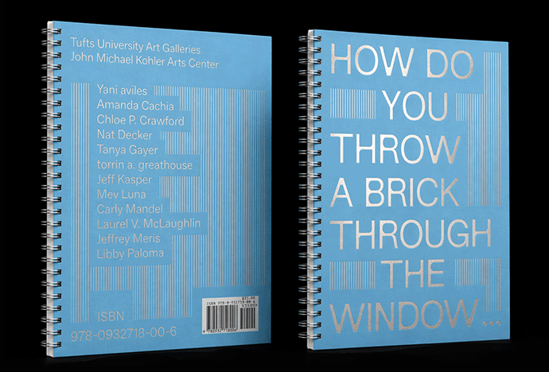

Book Launch: How do you throw a brick through the window…
Presented by John Michael Kohler Arts Center, Tufts University Art Galleries, and UIC Gallery 400
The publication launch of How do you throw a brick through the window…, produced alongside the exhibition of the same name. Both the exhibition and publication take inspiration from artist and activist Johanna Hedva’s question, “How do you throw a brick through the window of a bank if you can’t get out of bed?” Hedva’s statement questions the rights and opportunities of individuals with disabilities who navigate forms of protest.
The evening will include a talk by contributing author Amanda Cachia, who will discuss her essay in the publication alongside related scholarship from her recent book, Hospital Aesthetics: Disability, Medicine, Activism (2025). Exhibition co-curators and publication co-editors Tanya Gayer and Laurel V. McLaughlin will present an overview of the publication, including its design by Body & Forma, essays by Amanda Cachia, torrin a. greathouse, and Mev Luna, and the artworks and artists featured in the exhibition: Yani aviles, Chloe P. Crawford, Nat Decker, Jeff Kasper, Carly Mandel, Jeffrey Meris, and Libby Paloma.